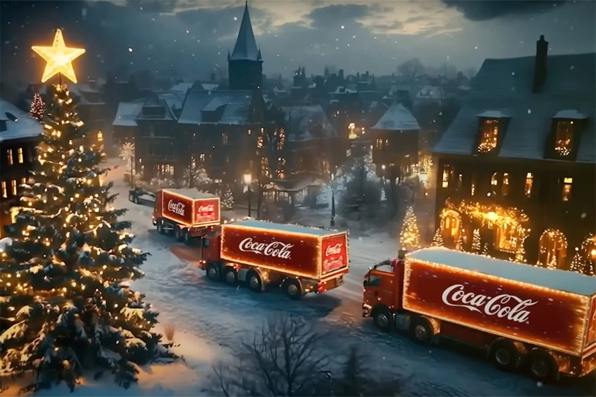
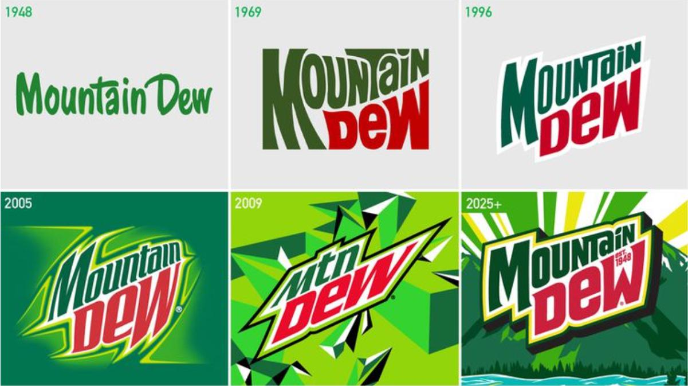

Blogs

December 16, 2025
New AI Christmas Ads Fail to Capture the Holiday Spirit Again This Year
Several high-profile holiday ad campaigns this year reveal how major brands continue to struggle with balancing AI-driven innovation and authentic emotional storytelling.
October 17, 2025
Top 3 Marketing Electives at UW Tacoma: Recommended by a Marketing Graduate
Three key marketing electives truly stand out in providing a well-rounded, modern marketing education at the University of Washington Tacoma. These classes combine creativity, analytics, and real-world application, helping you prepare for the rapidly evolving marketing landscape.

August 31, 2025
Blast to the Past: Why Nostalgic Logos Are Winning Over Gen Z
Logos are no longer just a visual afterthought, they’re a statement. After years of minimalist trends, brands are rediscovering personality, nostalgia, and authenticity to capture the attention of younger consumers. And it’s working.